Street Photography Notes
街拍整理
基于现有街拍笔记整理，聚焦拍摄地点、晴天与夜晚的街拍思路，以及适合在现场快速复用的观察和等待方法。
拍摄地点建议
上海
- 徐汇滨江公园
- 龙美术馆
南京
待补充。
苏州
待补充。
街拍核心思路
- 街拍强调环境中的人，而不是强肖像感。
- 先看光，再找线条、边框、镜面、前景和背景关系。
- 逆光更容易形成剪影，也更有利于分离人物和背景。
- 等待比追拍更重要，先选好位置，再等人物进入。
晴天街拍
曝光与景深
- 晴天不必把光圈开得太大。
- 类似 F5.6 的设置，通常能兼顾环境信息与主体分离。
常见拍法
- 逆光结合框架构图，拍剪影和强明暗对比。
- 顺光利用被照亮的建筑色彩，再加入花草、芦苇等前景。
- 把柱子、栏杆等线条纳入构图，等待人物经过。
- 寻找走廊、街道、通道里的纵深感。
- 使用“黑包白”思路，让深色区域包裹亮部主体。
- 利用镜子与反射面制造层次和陌生感。
- 在地下车库等位置从低处向上拍，适合中心构图。
- 用树叶等自然元素做前景，让阳光和人物剪影同时成立。
剪影
框架构图
黑包白
线条
前景遮挡
纵深感
镜面反射
夜晚街拍
核心观察点
- 继续沿用“黑包白”思路，把亮部当作画面中心。
- 主动找光源，例如店铺、窗户、楼道、广告牌、车灯和路灯。
- 优先拍逆光和侧逆光，让人物从背景里跳出来。
- 雨夜、玻璃、车窗、水面都能增强夜景层次。
常见拍法
- 把室内向外透出的光作为视觉中心。
- 在很暗的环境里关注红色和暖色元素。
- 利用雨夜车窗后的人影与倒影做叙事。
- 先找到灯光，再等待人物走进亮区。
- 暖光适合温馨场景，冷暖双侧光适合等待双人关系。
- 楼梯、墙边、建筑边缘都可以做分界线和剪影背景。
- 玻璃反射、灯光反射和低角度建筑全景都值得尝试。
主动找光
逆光
冷暖对比
玻璃反射
低角度
分界线
剪影层次
现场拍摄流程
1. 先看环境
- 先判断主光源位置。
- 确认背景是否干净。
- 观察是否有线条、边框、镜面和前景可利用。
2. 再定机位
- 低角度适合夸张空间关系。
- 正面等待适合中心构图。
- 侧面等待适合用墙面、楼梯、玻璃和柱子组织画面。
3. 最后等人物
- 等人物进入亮部或透视中心。
- 等动作、姿态和人物关系形成张力。
- 避免过度靠近，让画面仍然保留街拍的环境感。
避免的问题
- 只拍到人，没有拍到环境关系。
- 人物和背景没有形成层次分离。
- 前景、反射和线条过多，导致主体不明确。
- 画面太靠近人物，失去街拍语境。
参考视频：Bilibili BV1Bj411T7te
夜拍示例图
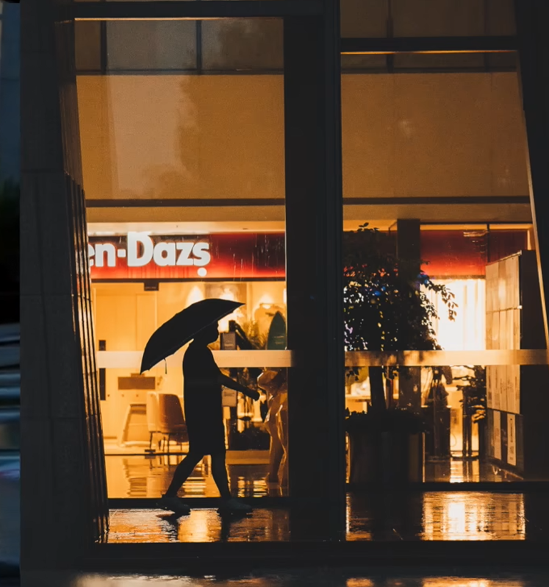
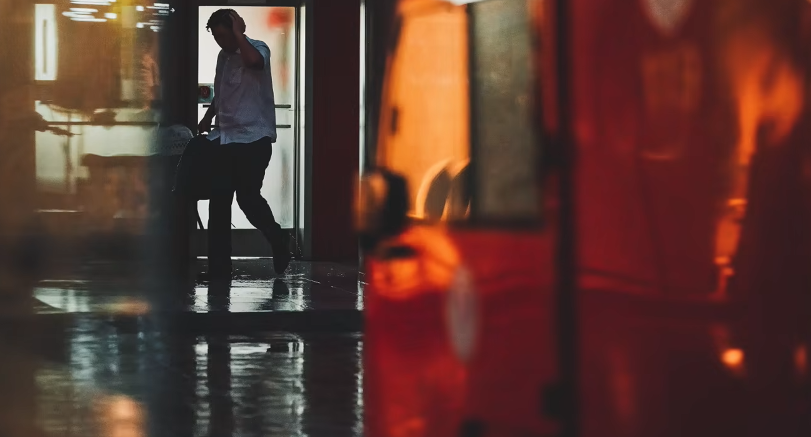
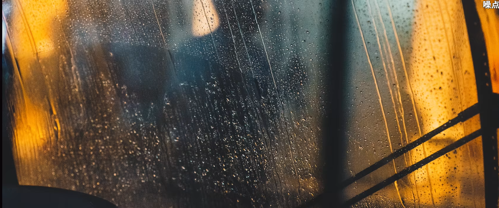
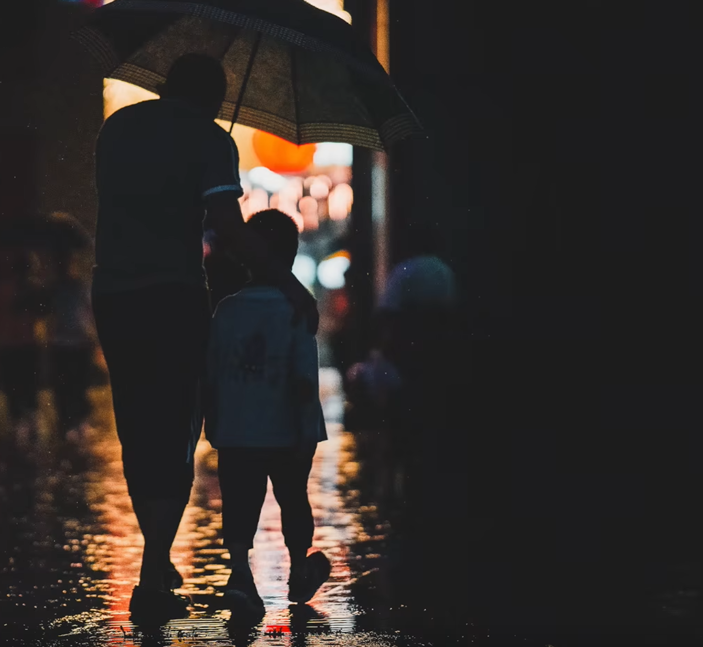
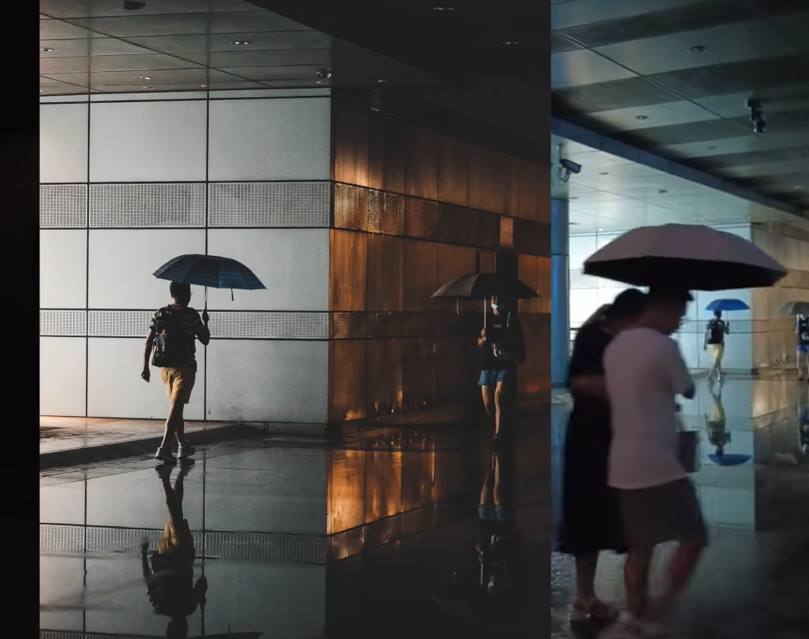
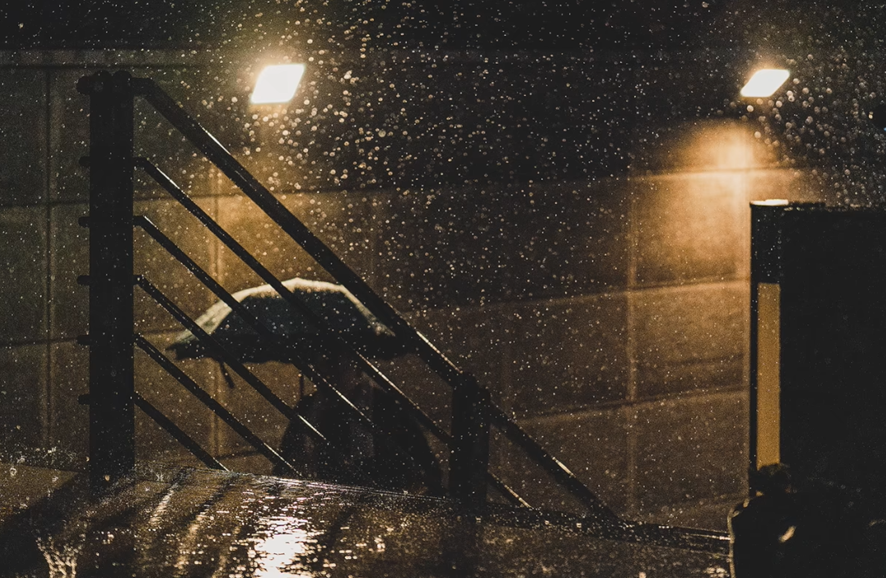
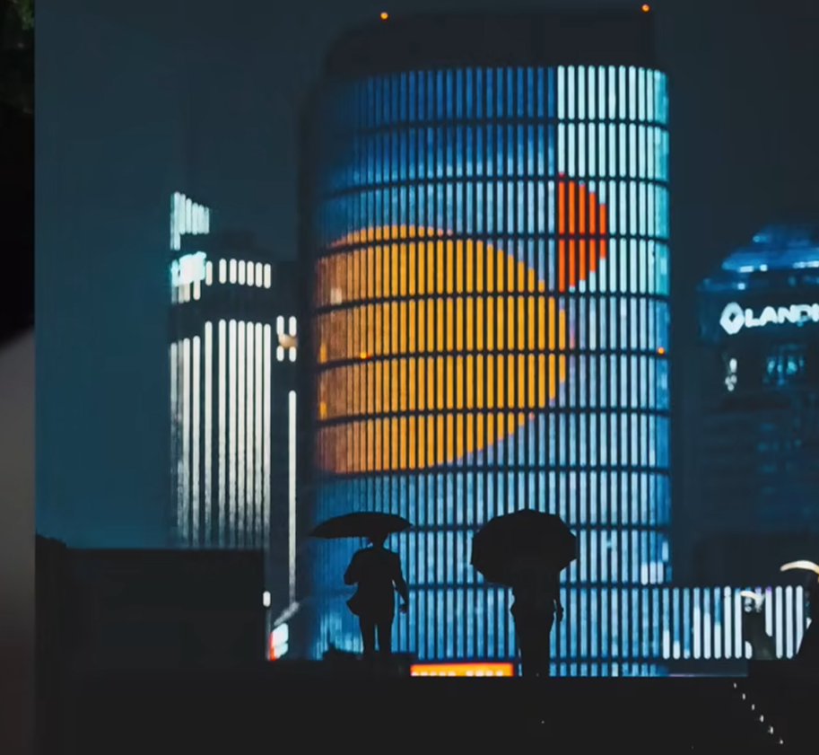
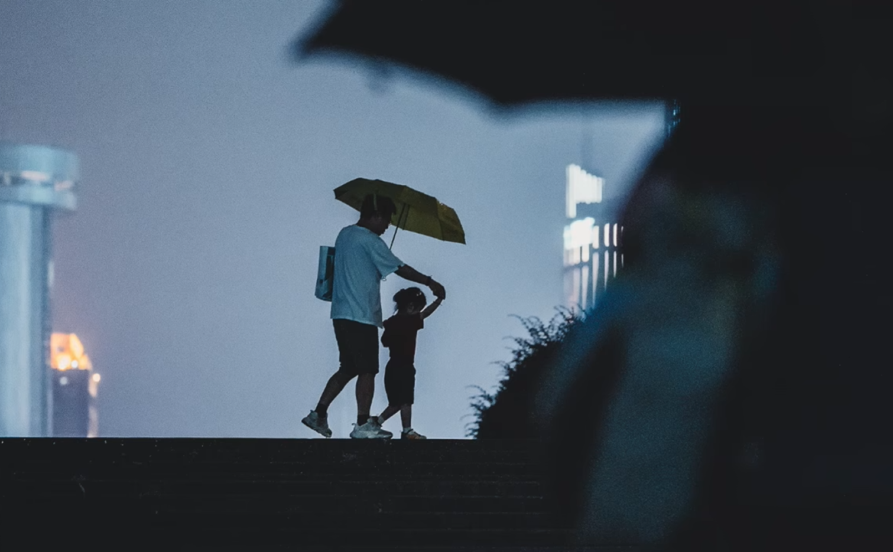
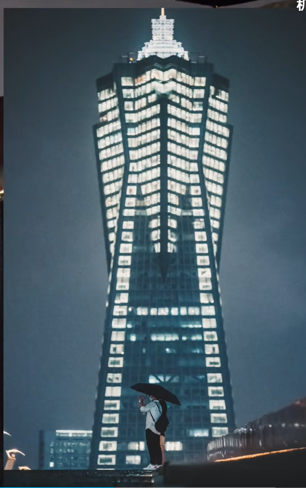
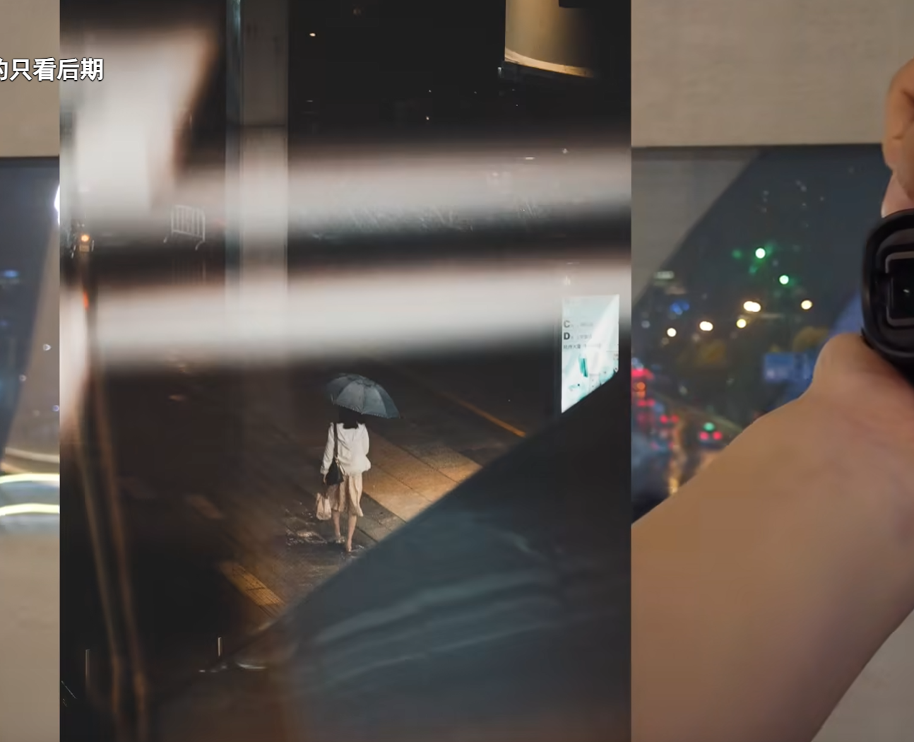
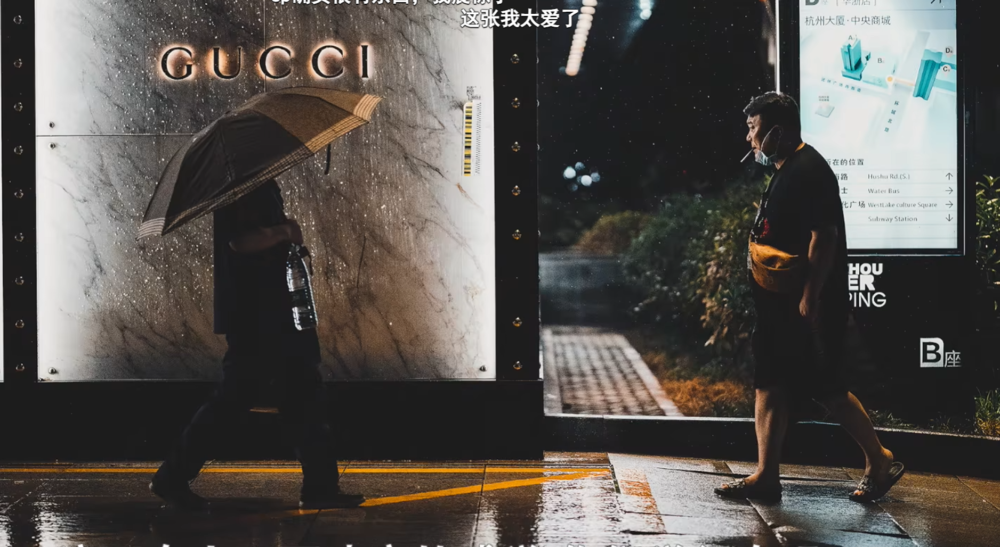